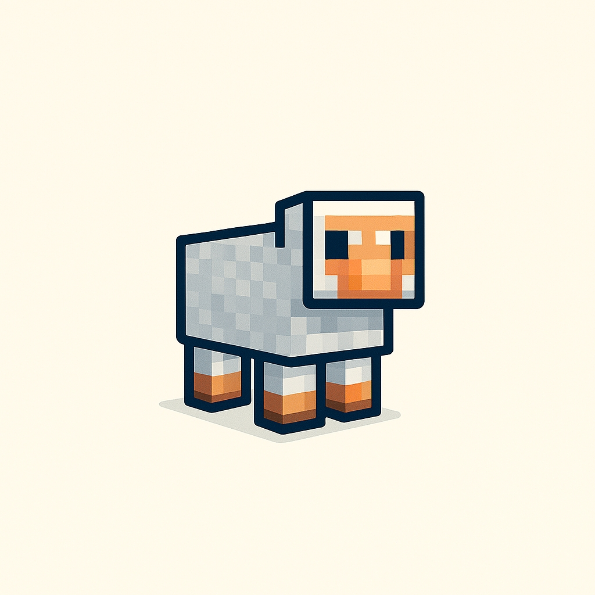

Un accompagnement sur mesure pour des expatriés en quête de sens.
Vous vivez une transition, une expatriation ou un moment de questionnement ? Minds Kraft vous propose un accompagnement sur-mesure, à la croisée de l’écoute, de la structure et du sens.
 Me contacter